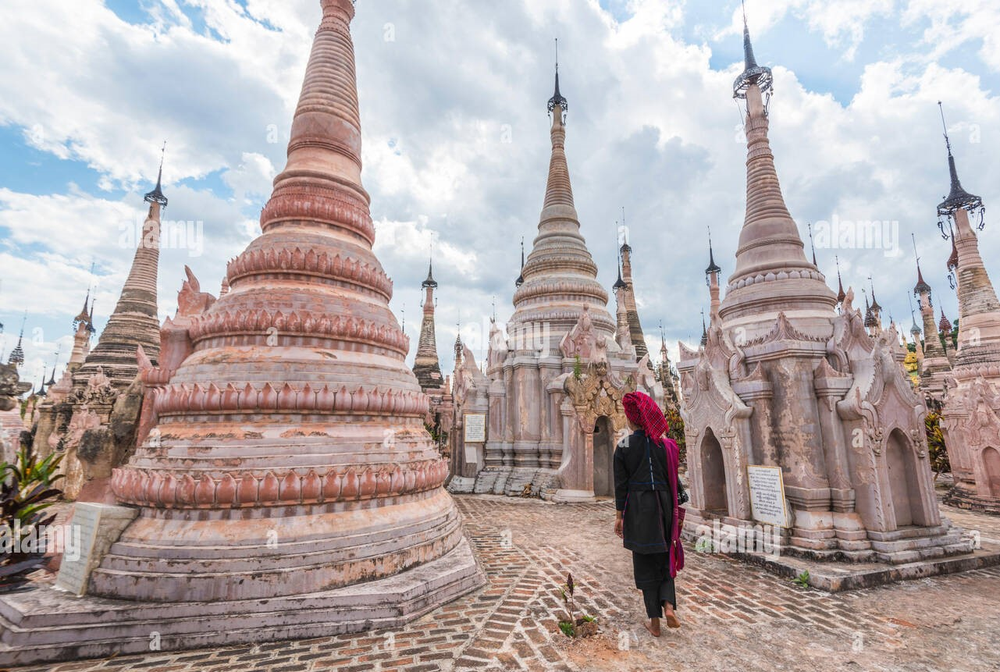
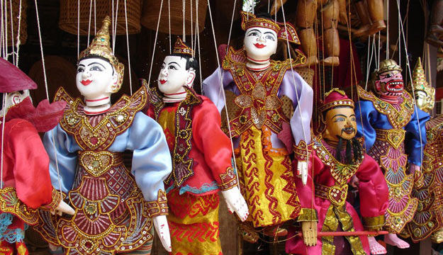

Places to go
One of the most popular things about Inle lake is to visit its floating market. A local market serves most common shopping needs and is held daily. The five days market rotates around the Inle Lake area, the towns of Shan State; Nyaung Shwe, Heho, Taunggyi, Minethauk, Shwe Nyaung, thus each of them hosting an itinerant market every fifth day. The different local tribe people rotate between five different locations over a 5-day period to sell their daily farm products.

To the south of Inle Lake is Thaung Thut which you can also get to from Nyaung Shwe by boat which takes just over an hour. The village is also famous as it is one of the hosts of the famous Five Day Market, so if possible try to time your visit here when the market is in town. One of the other highlights here is a scenic pathway which extends from the village to a series of small Shan temples that are covered in white stucco.
There are so many puppet shows all over Myanmar, so why Aung? Well, first of all, he comes from a family with a long tradition in the art. His father, his grandfather, and his grandfather’s father were all puppeteers, licensed by the state to carry on the important cultural tradition. Aung is no different; he got his license in 1985, and has been doing puppet shows for a living ever since. In fact, he is one of only 8 remaining licensed puppeteers left in the country. Why so few puppeteers? Well, the art of Burmese traditional storytelling with marionettes is a fine art indeed. Mastering it is a long process, and can be expensive, as the only place to get licensed is Yangon. It is much cheaper to make some puppets, throw on some music, and move them around for some tourists. Many hotels and restaurants do so.
The Kayan people are native to northern Myanmar where the women wear large brass neck rings. The practice starts as young children when rings are worn to deform the collar bones and upper ribs which, over time, creates the appearance of a stretched neck leading to a very distinctive look. It’s possible to see some of these women weaving cloth at the many crafts shops in the Inle Lake villages.